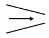
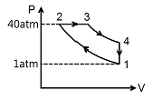
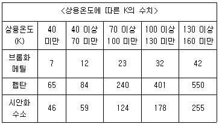
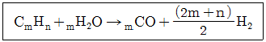
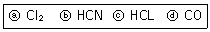
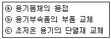

가스기사 (2012-03-04 기출문제)
1과목: 가스유체역학
1. 원심압축기의 폴리트로프 효율이 95%, 기계손실이 축동력의 2.0% 라면 전 폴리트로프 효율은 몇 %인가?
- 88.9
- 91.2
- 93.1
- 94.7
(정답률: 64%)

2. 수차의 효율을 η, 수차의 실제 출력을 L[PS], 수량을 Q[m3/s]라 할 때 유효낙차 H[m]를 구하는 식은?
- H＝L/(13.3ηQ) [m]
- H＝QL/(13.3η) [m]
- H＝Lη/(13.3Q) [m]
- H＝η/(L×13.3Q) [m]
(정답률: 65%)
3. 서징(surging)현상의 발생원인으로 거리가 가장 먼 것은?
- 펌프의 유량-양정곡선이 우향상승 구배 곡선일 때
- 배관 중에 수조나 공기조가 있을 때
- 유량조절밸브가 수조나 공기조의 뒤쪽에 있을 때
- 관속을 흐르는 유체의 유속이 급격히 변화될 때
(정답률: 58%)
4. 공기의 비열비는 k이고 기체상수는 R일 때 절대온도가 T인 공기에서의 음속은?
- RT/k
- √(kRT)
- kR/T
- kRT
(정답률: 83%)
5. Reynolds 수의 물리적 개념에 해당하는 것은?
- 관성력/점성력
- 점성력/중력
- 중력/관성력
- 탄성력/압력
(정답률: 85%)
6. 유체의 유동에서 에너지선(energy line)에 대한 설명으로 옳은 것은?
- 항상 수평선이 되어야 한다.
- 속도수두와 위치수두의 합이다.
- 수력구배선과 최소 2점 이상에서 교차한다.
- 수력구배선보다 속도수두 만큼 위에 있다.
(정답률: 78%)
7. 내경이 5㎝인 파이프 속에 유속이 3m/s이고 동점성계수가 2stokes인 용액이 흐를 때 레이놀즈수는?
- 333
- 750
- 1000
- 3000
(정답률: 73%)
8. Mach 수의 정의로 옳은 것은? (단, u는 유체의 속도, d는 관의 직경, a는 음속, ρ는 밀도, μ는 점도이다.)
- (d u ρ)/μ
- u/a
- a/u
- μ/(d u ρ)
(정답률: 74%)
9. 2개의 무한 수평 평판 사이에서의 층류 유동의 속도 분포가 u(y)＝U[1-(y/H)2]로 주어지는 유동장(Poiseuille flow)이 있다. 여기에서 U와 H는 각각 유동장의 특성 속도와 특성길이를 나타내며, y는 수직 방향의 위치를 나타내는 좌표이다. 유동장에서는 속도 u(y)만 있고, 유동체는 점성계수가 μ인 뉴톤유체일 때 y＝H/2에서의 전단 응력의 크기는?
- y＝H/2
- y＝(μU)/(2H2)
- y＝(μU)/H
- y＝(8μU)/(2H)
(정답률: 67%)
10. 축소-확대 노즐의 확대부에서 흐름이 초음속이라면 확대부에서 증가하는 것을 옳게 나타낸 것은? (단, 이상기체의 단열흐름이라고 가정한다.)
- 속도
- 속도, 밀도
- 압력
- 압력, 밀도
(정답률: 68%)
11. 유체는 분자들 간의 응집력으로 인하여 하나로 연결되어 있어서 연속물질로 취급하여 전체의 평균적 성질을 취급하는 경우가 많다. 이와 같이 유체를 연속체로 취급할 수 있는 조건은? (단, ℓ은 유동을 특정지어 주는 대표길이, λ는 분자의 평균 자유행로이다.)
- ℓ≪λ
- ℓ≫λ
- ℓ＝λ
- ℓ2＝λ
(정답률: 66%)
12. 온도 T0＝400K, Mach 수 M＝0.5인 1차원 공기유동의 정체온도(stagnation temperature)는 몇 K인가? (단, 공기는 이상기체이며, 등엔트로피 유동이고 비열비 k는 1.4이다.)
- 410
- 415
- 420
- 425
(정답률: 46%)
13. 이상기체를 등온압축시킬 때의 압축률은? (단, 압축률은 체적탄성계수의 역수이고, P는 절대압력, k는 비열비, vs는 비체적이다.)
- 1/P
- 1/vs
- kP
- 1/(kvs)
(정답률: 69%)
14. 용적형 펌프에 속하지 않는 것은?
- 나사펌프
- 기어펌프
- 베인펌프
- 축류펌프
(정답률: 59%)
15. 그림과 같은 관에서 유체가 등엔트로피 유동할 때 마하수 Ma＜1이라 한다. 이때 유동방향에 따른 속도와 압력의 변화를 옳게 나타낸 것은?

- 속도 : 증가, 압력 : 감소
- 속도 : 증가, 압력 : 증가
- 속도 : 감소, 압력 : 감소
- 속도 : 감소, 압력 : 증가
(정답률: 70%)
16. 어떤 유체의 운동문제에 8개의 독립적인 변수가 관계되고 모든 변수들의 차원을 나타내는데 질량 M, 길이 L, 시간 T가 모두 필요하였다면 몇 개의 독립적인 무차원량을 얻을 수 있는가?
- 3개
- 5개
- 8개
- 11개
(정답률: 78%)
17. 일반(이상) 기체상수를 나타낸 값으로 가장 거리가 먼 것은?
- 8.314(m3·Pa)/(mol·K)
- 0.08206(L·atm)/(kmol·K)
- 82.06(cm3·atm)/(mol·K)
- 8314(J/kmol·K)
(정답률: 67%)
18. 20℃의 공기를 지름 500㎜인 공업용 강관을 써서 264m3/min로 수송할 때 길이 100m에 대한 손실수두는 약 몇 ㎝인가? (단, Darcy-Weisbach 식의 관마찰계수는 0.1×10-3이다.)
- 22
- 37
- 51
- 67
(정답률: 51%)
19. 물을 사용하는 원심 펌프의 설계점에서의 전 양정이 30m이고 유량은 1.2m3/min이다. 이 펌프의 전효율이 80%라면 이 펌프를 1200rpm의 설계점에서 운전할 때 필요한 축동력을 공급하기 위한 토크는 약 몇 N·m인가?
- 46.7
- 58.5
- 467
- 585
(정답률: 47%)
20. 마하수가 1보다 작을 때 유체를 가속시키려면 어떻게 하여야 하는가?
- 단면적을 감소시킨다.
- 단면적을 증가시킨다.
- 단면적을 일정하게 유지시킨다.
- 단면적과는 상관없으므로 유체의 정도를 증가시킨다.
(정답률: 74%)
2과목: 연소공학
21. 가스설비의 정성적 위험성 평가방법으로 주로 사용되는 HAZOP기법에 대한 설명으로 틀린 것은?
- 공정을 이해하는 데 도움이 된다.
- 공정의 상호작용을 완전히 분석할 수 있다.
- 정확한 상세도면 및 데이터가 필요하지 않다.
- 여러 가지 공정형식(연속식, 회분식)에 적용 가능하다.
(정답률: 72%)
22. Fireball 에 의한 피해가 아닌 것은?
- 공기팽창에 의한 피해
- 탱크파열에 의한 피해
- 폭풍압에 의한 피해
- 복사열에 의한 피해
(정답률: 73%)
23. N2와 O2의 가스정수는 각각 30.26kgf·m/kg·K, 26,49kgf·m/kg·K이다. N2가 70%인 N2와 O2의 혼합가스의 가스정수는 얼마인가?
- 10.23
- 17.56
- 23.95
- 29.13
(정답률: 54%)
24. 방폭전기기기의 구조별 표시방법 중 틀린 것은?
- 내압방폭구조(d)
- 안전증방폭구조(s)
- 유입방폭구조(o)
- 본질안전방폭구조(ia 또는 ib)
(정답률: 83%)
25. 가연성 가스의 폭발범위에 대한 설명으로 옳지 않은 것은?
- 일반적으로 압력이 높을수록 폭발범위는 넓어진다.
- 가연성 혼합가스의 폭발범위는 고압에서는 상압에 비해 훨씬 넓어진다.
- 프로판과 공기의 혼합가스에 불연성가스를 첨가하는 경우 폭발범위는 넓어진다.
- 수소와 공기의 혼합가스는 고온에 있어서는 폭발범위가 상온에 비해 훨씬 넓어진다.
(정답률: 84%)
26. 카르노사이클(Carnot Cycle)이 ⓐ100℃와 200℃ 사이에서 작동하는 것과 ⓑ300℃와 400℃사이에서 작동하는 것이 있을 때, 다음 열효율에 대한 설명으로 옳은 것은?
- ⓐ은 ⓑ보다 열효율이 크다.
- ⓐ은 ⓑ보다 열효율이 작다.
- ⓐ과 ⓑ의 열효율은 같다.
- ⓑ는 ⓐ의 열효율 제곱과 같다.
(정답률: 77%)
27. 다음 중 비열에 대한 설명으로 옳지 않은 것은?
- 정압비열은 정적비열보다 항상 크다.
- 물질의 비열은 물질의 종류와 온도에 따라 달라진다.
- 정적비열에 대한 정압비열의 비(비열비)가 큰 물질 일수록 압축 후의 온도가 더 높다.
- 물질의 비열이 크면 그 물질의 온도를 변화시키기 쉽고, 비열이 크면 열용량도 크다.
(정답률: 74%)
28. 환경오염을 방지하기 위한 NOx 저감 방법이 아닌 것은?
- 공기비를 높여 충분한 공기를 공급한다.
- 연소실을 크게 하여 연소실 부하를 낮춘다.
- 고온영역에서의 체류시간을 짧게 한다.
- 박막연소를 통해 연소온도를 낮춘다.
(정답률: 55%)
29. 열기관의 효율을 길이의 비로 나타낼 수 있는 선도는?
- P-T선도
- T-S선도
- H-S선도
- P-V선도
(정답률: 79%)
30. 메탄가스 1m3를 완전연소시키는 데 필요한 공기량은 몇 m3인가? (단, 공기 중 산소는 20% 함유되어 있다.)
- 5
- 10
- 15
- 20
(정답률: 63%)
31. 수증기 1mol이 100℃, 1atm에서 물로 가역적으로 응축될 때 엔트로피의 변화는 약 몇 cal/mol·K인가? (단, 물의 증발열은 539cal/g, 수증기는 이상기체라고 가정한다.)
- 26
- 540
- 1700
- 2200
(정답률: 45%)
32. 다음 중 증기원동기의 가장 기본이 되는 동력 사이클은?
- 오토(otto)사이클
- 디젤(diesel)사이클
- 랭킨(rankine)사이클
- 사바테(sabathe)사이클
(정답률: 70%)
33. 가스버너의 역화(flash back) 대책으로 틀린 것은?
- 리프트(lift)한계가 큰 버너를 사용하여 저연소 시의 분출속도를 크게 한다.
- 다공버너에서는 각각의 연료분출구를 적게 한다.
- 연소용 공기를 분할 공급하여 1차 공기를 착화범위보다 적게 한다.
- 버너부근의 온도를 높게한다.
(정답률: 70%)
34. 다음은 디젤 기관 사이클이다. 압축비를 구하면? (단, 비열비 k는 1.4이다.)

- 8.74
- 11.50
- 13.94
- 12.83
(정답률: 48%)
35. 가스의 연소속도에 영향을 미치는 인자에 대한 설명 중 틀린 것은?
- 연소속도는 일반적으로 이론혼합기보다 약간 과농한 혼합비에서 최대가 된다.
- 층류연소 속도는 초기온도의 상승에 따라 증가한다.
- 연소속도의 압력의존성이 매우 커 고압에서 급격한 연소가 일어난다.
- 이산화탄소를 첨가하면 연소범위가 좁아진다.
(정답률: 50%)
36. 가연성 기체의 최소 착화에너지에 대한 설명으로 옳은 것은?
- 온도가 높아질수록 최소 착화에너지는 높아진다.
- 연소속도가 느릴수록 최소 착화에너지는 낮아진다.
- 열전도율이 적을수록 최소 착화에너지는 낮아진다.
- 압력이 낮을수록 최소 착화에너지는 낮아진다.
(정답률: 58%)
37. 다음 무차원수 중 열확산계수에 대한 운동량확산계수의 비에 해당하는 것은?
- Lewis number
- Nusselt number
- Grashof number
- Prandtl number
(정답률: 69%)
38. 불활성화(inerting)가스로 사용할 수 없는 가스는?
- 수소
- 질소
- 이산화탄소
- 수증기
(정답률: 67%)
39. 다음 중 사이클의 효율을 높이는 가장 유효한 방법은?
- 고열원(급열) 온도를 높인다.
- 저열원(배열) 온도를 높인다.
- 동작 물질의 양을 많게 한다.
- 고열원과 저열원 온도를 모두 높인다.
(정답률: 65%)
40. 다음 중 표면연소에 대하여 가장 옳게 설명한 것은?
- 오일이 표면에서 연소하는 상태
- 고체 연료가 화염을 길게 내면서 연소하는 상태
- 화염의 외부 표면에 산소가 접촉하여 연소하는 상태
- 적열된 코크스 또는 숯의 표면에 산소가 접촉하여 연소하는 상태
(정답률: 82%)
3과목: 가스설비
41. 단열을 한 배관 중에 작은 구멍을 내고 이 관에 압력이 있는 유체를 흐르게 하면 유체가 작은 구멍을 통할 때 유체의 압력이 하강함과 동시에 온도가 변화하는 현상을 무엇이라고 하는가?
- 토리첼리 효과
- 줄-톰슨 효과
- 베르누이 효과
- 도플러 효과
(정답률: 74%)
42. 린데식 공기액화분리장치에 해당하지 않는 것은?
- 터보식 공기압축기 사용
- 피스톤식 팽창기 사용
- 축냉기 사용
- 주울-톰슨효과 이용
(정답률: 48%)
43. 원심펌프의 특징에 대한 설명으로 틀린 것은?
- 저양정에 적합하다.
- 펌프에 충분히 액을 채워야 한다.
- 용량에 비하여 설치면적이 작고 소형이다.
- 원심력에 의하여 액체를 이송한다.
(정답률: 65%)
44. 관이 콘크리트 벽을 관통할 경우 관과 벽 사이에 절연을 하는 가장 주된 이유는?
- 누전을 방지하기 위하여
- 벽에 의한 관의 기계적 손상을 막기 위하여
- 관의 부식을 방지하기 위하여
- 관의 변형 여유를 주기 위하여
(정답률: 76%)
45. 온도 T2저온체에서 흡수한 열량을 q2, 온도 T1인 고온체에서 버린 열량을 q1이라할 때 냉동기의 성능계수는?
- (q1-q2)/q1
- q2/(q1-q2)
- (T1-T2)/T1
- T1/(T1-T2)
(정답률: 52%)
46. 브롬화메틸 30톤(T＝110℃), 펩탄 50톤(T＝120℃), 시안화수소 20톤(T＝100℃)이 저장되어 있는 고압가스특정제조시설의 안전구역 내 고압가스 설비의 연소열량을 구하면? (단, T는 사용온도이며, K＝4.1(T-T0)×103로 산정)

- 2,457
- 4,910
- 5,222
- 6,254
(정답률: 40%)
47. 찜질방 가스사용시설 중 가열로의 구조로 틀린 것은?
- 버너마다 소화안전장치를 설치한다.
- 버너마다 과열방지장치를 설치한다.
- 버너마다 자동점화장치를 설치한다.
- 버너의 배기는 자연배기식으로 한다.
(정답률: 74%)
48. 가스 연소기에서 발생할 수 있는 역화(Flash back)현상의 발생원인으로 옳지 않은 것은?
- 가스압력이 이상적으로 저하된 경우
- 1차 공기 댐퍼가 너무 열려 1차 공기 흡입이 과대하게 된 경우
- 버너가 오래되어 부식에 의해 염공이 작게 된 경우
- 노즐, 기구밸브 등이 막혀 가스량이 극히 적게 된 경우
(정답률: 52%)
49. 내용적 50L의 용기에 내압시험을 하고자 한다. 이 경우 30kg/cm2인 수압을 걸었을 때 용기의 용적이 50.6L로 늘어났고, 압력을 제거하여 대기압으로 하였더니 용기의 용적은 50.03L로 되었다. 이때 영구증가율은 얼마인가?
- 0.3%
- 0.5%
- 3%
- 5%
(정답률: 55%)
50. 천연가스의 액화에 대한 설명으로 올바른 것은?
- 캐스케이드 사이클은 천연가스를 액화하는 대표적인 냉동사이클이다.
- 임계온도 이상, 임계압력 이하에서 천연가스를 액화한다.
- 가스전에서 채취된 천연가스는 청결하므로 별도의 전처리 과정이 필요하지 않다.
- 천연가스의 효율적 액화를 위해서는 성능이 우수한 단일 조성의 냉매 사용이 권고된다.
(정답률: 70%)
51. 수소의 공업적 제조법 중 다음 반응식과 관계있는 것은?

- 일산화탄소 전화법
- 부분 산화법
- 수증기 개질법
- 천연가스 분해법
(정답률: 65%)
52. 외부전원법에 의한 전기방식시설의 유지관리 시 3개월에, 1회 이상 점검대상이 아닌 것은?
- 정류기 출력
- 배선의 접속 상태
- 역전류방지장치
- 계기류 확인
(정답률: 50%)
53. 다음 중 회전펌프에 해당하는 것은?
- 플랜지 펌프
- 피스톤 펌프
- 기어 펌프
- 다이어프램 펌프
(정답률: 74%)
54. 이음새 없는 용기의 제조법 중 이음새 없는 강관을 사용하는 방식은?
- 웰딩식
- 딥드로잉식
- 에르하르트식
- 만네스만식
(정답률: 76%)
55. 전양정이 30m, 송출량이 1.5m3/min, 효율이 72%인 펌프의 축동력은 몇 약 kW인가?
- 7.4kW
- 7.7kW
- 9.4kW
- 10.2kW
(정답률: 67%)
56. 고압식 액화산소 분리장치의 제조과정에 대한 설명으로 옳은 것은?
- 원료공기는 1.5~2.0MPa로 압축된다.
- 공기 중의 탄산가스는 실리카겔 등의 흡착제로 제거한다.
- 공기압축기 내부윤활유를 광유로 하고 광유는 건조로에서 제거한다.
- 액체질소와 액체공기는 상부 탑에 이송되나 이때 아세틸렌 흡착기에서 액체공기 중 아세틸렌과 탄화수소가 제거된다.
(정답률: 58%)
57. 도시가스에 냄새가 나는 부취제를 첨가하는데, 공기 중 혼합비율의 용량으로 얼마의 상태에서 감지할 수 있도록 첨가하고 있는가?
- 1/1,000
- 1/2,000
- 1/3,000
- 1/5,000
(정답률: 73%)
58. 고온수증기 개질프로세스(ICI)법의 공정이 아닌 것은?
- 원료의 탈황
- 가스 제조
- CO의 변성
- CH4의 개질
(정답률: 60%)
59. 수소취성에 대한 설명으로 옳은 것은?
- 수소가 고온, 고압에서 강 중의 탄소와 화합하여 메탄을 생성하는 것을 수소취성이라 한다.
- 니켈강은 수소취성에 우수한 재료이다.
- 수소는 고온 고압에서 강 중의 철과 반응하는 것을 수소취성이라 한다.
- 수소가 고온, 고압에서 철족의 원소와 화합하여 금속 카르보닐화합물을 생성하는 것을 수소취성이라 한다.
(정답률: 60%)
60. 왕복동식 압축기의 특징으로 틀린 것은?
- 용적형이다.
- 윤활유식 및 무급유식이다.
- 접촉부가 적어 보수 및 점검이 용이하다.
- 용량조절의 범위가 넓다.
(정답률: 74%)
4과목: 가스안전관리
61. 아세틸렌을 충전하기 위한 기술기준으로 옳은 것은?
- 아세틸렌을 2.5MPa의 압력으로 압축할 때에는 질소·메탄·일산화탄소 또는 에틸렌 등의 희석제를 첨가한다.
- 습식아세틸렌발생기의 표면의 부근에 용접작업을 할 때에는 70℃ 이하의 온도로 유지하여야 한다.
- 아세틸렌 용기에 다공물질을 고루 채워 다공도가 70% 이상 95% 미만이 되도록 한다.
- 아세틸렌을 용기에 충전할 때 충전 중의 압력은 3.5MPa 이하로 하고, 충전 후에는 압력이 15℃에서 2.5MPa 이하로 될 때까지 정치하여 둔다.
(정답률: 63%)
62. 액화석유가스 집단공급 시설에서 배관을 차량이 통행하는 도로 밑에 매설할 경우 몇 m이상의 깊이를 유지하여야 하는가?
- 0.6m
- 1m
- 1.2m
- 1.5m
(정답률: 66%)
63. 발열량이 11400kcal/m3이고 가스비중이 0.7, 공급압력이 200㎜H20인 나프타가스의 웨버지수는 약 얼마인가?
- 10700
- 11360
- 12950
- 13625
(정답률: 61%)
64. 독성가스인 염소 500kg을 운반할 때 보호구를 차량의 승무원수에 상당한 수량을 휴대하여야 한다. 다음 중 휴대하지 않아도 되는 보호구는?
- 방독마스크
- 공기호흡기
- 보호의
- 보호장갑
(정답률: 85%)
65. 도시가스 제조소 신규 설치공사 시 공사 계획 승인 대상에 해당되지 않는 것은?
- 압송기 설치
- 펌프 설치
- 송풍기 설치
- 관경 100mm인 고압배관 설치
(정답률: 61%)
66. 산소, 아세틸렌, 수소 제조 시 품질검사의 실시 횟수로 옳은 것은?
- 1일 3회 이상
- 1일 1회 이상
- 가스제조 시 마다
- 매시간 마다
(정답률: 79%)
67. 지중에 설치하는 강재배관의 전기방식 효과 유지를 위하여 절연조치를 하여야 하는 도시가스시설이 아닌 것은?
- 배관과 철근콘크리트구조물 사이
- 배관과 강재보호관 사이
- 배관과 배관지지물 사이
- 양극(Anode)과 배관 사이
(정답률: 54%)
68. 차량에 고정된 탱크에는 차량의 진행방향과 직각이 되도록 방파판을 설치하여야 한다. 방파판의 면적은 탱크 횡단면적의 몇 % 이상이 되어야 하는가?
- 30
- 40
- 50
- 60
(정답률: 61%)
69. 산소 및 독성가스의 운반 중 가스누출부분의 수리가 불가능한 사고 발생 시 응급조치사항으로 틀린 것은?
- 상황에 따라 안전한 장소로 운반한다.
- 부근에 있는 사람을 대피시키고, 동행인은 교통통제를 하여 출입을 금지시킨다.
- 화재가 발생한 경우 소화하지 말고 즉시 대피한다.
- 독성가스가 누출한 경우에는 가스를 제독한다.
(정답률: 81%)
70. 다음 중 독성이 강한 것에서 약한 순서로 나타낸 것은?

- ⓐ-ⓒ-ⓑ-ⓓ
- ⓐ-ⓒ-ⓓ-ⓑ
- ⓑ-ⓐ-ⓓ-ⓒ
- ⓑ-ⓐ-ⓒ-ⓓ
(정답률: 56%)
71. 염소가스에 대한 설명으로 틀린 것은?
- 수분 존재 시 금속에 강한 부식성이 있다.
- 강력한 산화제이다.
- 무색, 무미의 맹독성 기체이다.
- 유기화합물과 반응하여 폭발적인 화합물을 형성한다.
(정답률: 60%)
72. 고온, 고압하의 수소에서는 수소원자가 발생되어 금속조직으로 침투하여 carbon이 결합, CH4등의 gas를 생성하여 용기가 파열하는 원인이 될 수 있는 현상은?
- 금속조직에서의 탄소의 추출
- 금속조직에서의 아연의 추출
- 금속조직에서의 스테인리스강의 추출
- 금속조직에서의 구리의 추출
(정답률: 67%)
73. 용기내장형 액화석유가스 용기의 안전밸브 작동 성능의 기준은?
- 1.0MPa 이상, 1.5MPa 이하에서 작동
- 1.8MPa 이상, 2.0MPa 이하에서 작동
- 2.0MPa 이상, 2.2MPa 이하에서 작동
- 2.5MPa 이상, 3.0MPa 이하에서 작동
(정답률: 49%)
74. 고압가스 냉동제조설비의 시설기준에 대한 설명 중 틀린 것은?
- 가연성가스의 검지경보장치는 방폭성능을 갖는 것으로 한다.
- 냉매설비의 안전을 확보하기 위하여 액면계를 설치하며 액면계의 상하에는 수동식 및 자동식 스톱밸브를 각각 설치한다.
- 압력이 상용압력을 초과할 때 압축기의 운전을 정지시키는 고압차단장치를 설치하되 원칙적으로 수동복귀방식으로 한다.
- 냉매설비에 부착하는 안전밸브는 분리할 수 없도록 단단하게 부착한다.
(정답률: 63%)
75. 다음 [보기] 중 용기 제조자가 수리할 수 있는 용기의 수리범위에 해당되는 것으로만 짝지어진 것은?

- ⓐ
- ⓐ, ⓑ
- ⓑ, ⓒ
- ⓐ, ⓑ, ⓒ
(정답률: 71%)
76. 공기 중 가스의 폭발범위를 바르게 연결한 것은?
- 메탄 : 3~12.5%
- 수소 : 3~80%
- 아세틸렌 : 4~75%
- 프로판 : 2.1~9.5%
(정답률: 70%)
77. LPG를 사용하는 사용시설 중 자동절체기를 사용하여 용기를 집합하는 경우 저장능력이 얼마 이상인 때 용기에서 압력조정기 입구까지의 배관에 이상 압력 상승 시 압력을 방출할 수 있는 안전장치를 설치하여야 하는가?
- 200kg
- 250kg
- 500kg
- 1000kg
(정답률: 47%)
78. 액화가스를 충전하는 차량의 탱크 내부에 액면 요동 방지를 위하여 설치하는 것은?
- 콕크
- 긴급 탈압밸브
- 방파판
- 충전판
(정답률: 79%)
79. 냉매가스 중 염화메탄 가스를 접하는 부분의 재료에 사용할 수 없는 금속재료는?
- 탄소강
- 모넬메탈
- 동 및 동합금
- 알루미늄합금
(정답률: 49%)
80. 액화석유가스 저장탱크에 설치된 긴급 차단 장치의 차단 조작기구는 해당 저장탱크로부터 몇 m 이상 떨어진 곳에 설치하여야 하는가?
- 3m
- 5m
- 7m
- 10m
(정답률: 59%)
5과목: 가스계측기기
81. 캐스케이드 제어에 대한 설명으로 옳은 것은?
- 비율제어라고도 한다.
- 단일 루프제어에 비해 내란의 영향이 없으나 계전체의 지연이 크게 된다.
- 2개의 제어계를 조합하여 제어량을 1차 조절계로 측정하고 그 조작 출력으로 2차 조절계의 목표치를 설정한다.
- 물체의 위치, 방위, 자세 등의 기계적 변위를 제어량으로 하는 제어계이다.
(정답률: 77%)
82. 가스크로마토그래피 분석기에서 FID(Flame Ionization Detector)검출기의 특성에 대한 설명으로 옳은 것은?
- 시료를 파괴하지 않는다.
- 대상 감도는 탄소수에 반비례한다.
- 미량의 탄화수소를 검출할 수 있다.
- 연소성 기체에 대하여 감응하지 않는다.
(정답률: 75%)
83. 단열형 열량계로 2g의 기체연료를 연소시켜 발열량을 구하였다. 내통의 수량이 1600g, 열량계의 수당량이 800g, 온도상승이 10℃ 이었다면 발열량은 약 몇 J/g인가? (단, 물의 비열은 4.19J/g·K로 한다.)
- 1.7x104
- 3.4x104
- 5.0x104
- 6.8x104
(정답률: 32%)
84. 자동제어 계측기의 정특성에서 입력값을 증가시키면서 발생되는 출력값과 입력을 감소시키면서 발생되는 출력값의 차이를 의미하는 것은?
- 반복성
- 선형성
- 히스테리시스
- 분해능
(정답률: 69%)
85. 가스미터 선정 시 주의사항으로 가장 거리가 먼 것은?
- 사용 가스의 적정성
- 내구성
- 내관검사
- 오차의 유무
(정답률: 73%)
86. 흡수법에 의한 가스분석법 중 각 성분과 가스 흡수액을 옳지 않게 짝지은 것은?
- 이산화탄소흡수액 - 연화나트륨 수용액
- 중탄화수소흡수액 - 발연황상
- 산소흡수액 - (수산화칼륨＋피로카롤)수용액
- 일산화탄소흡수액 - (연화암모늄＋염화제1구리)의 분해용액에 암모니아수를 가한 용액
(정답률: 58%)
87. 25℃, 전체압력이 760㎜Hg일 때 상대습도가 40%이었다. 건조공기 500kg 안의 습한 공기의 양은 약 몇 kg인가? (단, 25℃ 에서의 포화수증기압은 40.3㎜Hg이다.)
- 13kg
- 11kg
- 9kg
- 7kg
(정답률: 29%)
88. 냉동용 암모니아탱크의 연결 부위에서 암모니아의 누출여부를 확인하려 한다. 가장 적절한 방법은?
- 염화팔라듐지로 흑색으로 변하는가 확인한다.
- 초산용액을 발라 청색으로 변하는가 확인한다.
- 리트머스시험지로 청색으로 변하는가 확인한다.
- KI-전분지로 청갈색으로 변하는가 확인한다.
(정답률: 78%)
89. 벤투리관 유량계의 특징에 대한 설명으로 옳지 않은 것은?
- 압력손실이 적다.
- 구조가 복잡하고 대형이다.
- 축류(縮流)의 영향을 비교적 많이 받는다.
- 내구성이 좋고 정확도가 높다.
(정답률: 51%)
90. 2종의 금속선 양 끝에 접점을 만들어 주어 온도차를 주면 기전력이 발생하는데 이 기전력을 이용하여 온도를 표시하는 온도계는?
- 열전대온도계
- 방사온도계
- 색온도계
- 제겔콘온도계
(정답률: 78%)
91. 몇몇 종류의 결정체는 특정한 방향으로 힘을 받으면 자체 내에 전압이 유기되는 성질이 있다. 이러한 성질을 이용한 압력계는?
- 스트레인게이지 압력계
- 정전용량형 압력계
- 전위차계형 압력계
- 압전형 압력계
(정답률: 57%)
92. 오르자트(Orsat) 가스분석기의 가스 분석 순서를 옳게 나타낸 것은?
- CO2 → O2 → CO
- O2 → CO → CO2
- O2 → CO2 → CO
- CO → CO2 → O2
(정답률: 82%)
93. 계량계측기기는 정확, 정밀하여야 한다. 이를 확보하기 위한 제도 중 계량법상 강제 규정이 아닌 것은?
- 검정
- 정기검사
- 수시검사
- 비교검사
(정답률: 73%)
94. 이중벽 유리로 건물을 단열하였다. 이중 유리벽 내에 다음과 같이 단열을 하였을 때 가장 우수한 단열방법은?
- 이중벽 사이를 진공으로 한다.
- 이중벽 사이를 대기압의 Ar을 채운다.
- 이중벽 사이를 대기압의 He을 채운다.
- 이중벽 사이를 물을 채운다.
(정답률: 70%)
95. 서미스터(thermister)저항체 온도계의 특징에 대한 설명으로 옳은 것은?
- 온도계수가 적으며 균일성이 좋다.
- 저항변화가 적으며 재현성이 좋다.
- 온도상승에 따라 저항치가 감소한다.
- 수분 흡수 시에도 오차가 발생하지 않는다.
(정답률: 54%)
96. 태엽의 힘으로 통풍하는 통풍형 건습구 습도계로서 휴대가 편리하고 최소 필요 풍속이 3m/s인 습도계는?
- 아스만 습도계
- 모발 습도계
- 간이건습구 습도계
- Dewcel식 습도계
(정답률: 65%)
97. 비중 1.1인 물질의 Baume도는 얼마인가?
- 6
- 8
- 10
- 13
(정답률: 38%)
98. 목표값이 미리 정해진 변화를 하거나 제어순서 등을 지정하는 제어로서 금속이나 유리 등의 열처리에 응용하면 좋은 제어방식은?
- 비율제어
- 프로그램제어
- 캐스케이드제어
- 타력제어
(정답률: 72%)
99. 계측기의 강도에 대하여 바르게 나타낸 것은?
- 지시량의변화 / 측정량의변화
- 측정량의변화 / 지시량의변화
- 지시량의 변화 - 측정량의 변화
- 측정량의 변화 - 지시량의 변화
(정답률: 57%)
100. 오리피스 미터로 유량을 측정하는 원리로 옳은 것은?
- Archimedes의 원리
- Hagen-Poiseuille의 원리
- Faraday의 법칙
- Bernoulli의 정리
(정답률: 65%)